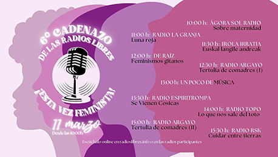
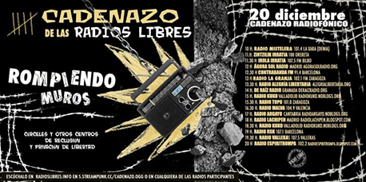
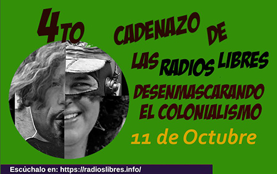
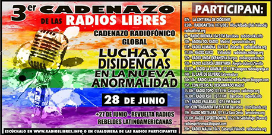
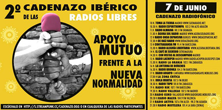
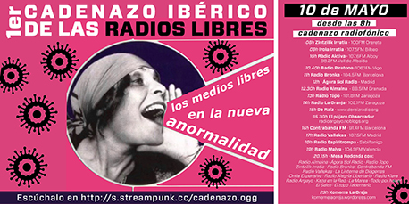

Todos los podcasts de las Radios Libres
en una misma emisión.
Emisiones coordinadas de las Radios Libres
El 11 de marzo de 2023 las radios libres del estado español volvieron a unir sus fuerzas para la emisión del 6º Cadenazo… ¡esta vez feminista!. Una emisión conjunta de 8 radios libres y podcast durante 7 horas que no solo ha sido feminista en cuanto a los contenidos de la parrilla, sino que las mujeres integrantes de estas radios han sido también las que han estado a cargo de todo el control técnico en este Cadenazo. La parrilla ha contado con la participación de Ágora Sol Radio, Irola Irratia, De Raíz Radio, Radio Argayo, Radio RSK, Radio La Granja, Radio Espiritrompa y Radio Topo.

El pasado 20 de diciembre de 2020 tuvo lugar la emisión especial del 5º Cadenazo de las radios libres del estado español. En esta ocasión fue una emisión monográfica sobre cárceles, CIEs, centros de menores y otros centros de privación de libertad. Participaron 17 radios y podcast del entorno de las radios libres del estado español en una emisión ininterrumpida de 11 horas que fue retransmitida simultáneamente por las radios libres participantes, en sus emisiones online y FM.

16 radios libres y comunitarias de Abya Yala (América), Aragón y el Estado español, entre ellas Radio La Granja, se unen de nuevo en una emisión conjunta el 11 de octubre para señalar que el 12 de octubre a un lado y otro del charco no hay nada que celebrar, pero mucho que analizar y pensar. "Queremos desenmascarar el colonialismo que sigue vigente así como analizar colonialismos históricos según las distintas realidades de cada territorio".

Coincidiendo con el Día del Orgullo LGTBI+ el domingo 28 de junio del 2020, más de 20 radios libres y podcast
de todo el estado se unieron en una emisión conjunta dedicada a las luchas y disidencias en la nueva anormalidad.
Difundimos así las acciones, reivindicaciones, pensamientos y realidades de personas y colectivos que estas
semanas atrás han visibilizado especialmente su lucha contra el racismo, así como las disidencias vinculadas
a temática de liberación sexual y de género, que tienen más presencia esta semana con motivo del Día
Internacional del Orgullo LGTBI+, sin olvidarnos de todas las luchas de clase, contra la exclusión,
la pobreza, por el derecho a la vivienda, el trabajo y por una vida que merezca la pena ser vivida.
Por una normalidad en la cual quepamos todas. Por una normalidad que merezca la pena ser vivida.

El 7 de junio del 2020, 25 radios libres y podcast de todo el estado se unieron en una emisión conjunta por el apoyo mutuo, contra la exclusión y la pobreza de la nueva normalidad, #CadenazoApoyoMutuo. En esta emisión participaron Radio Espiritrompa, Radio Almaina, Ágora Sol Radio, Contrabanda FM, Radio La Granja, Radio Bronka, Radio Argayo, Irola Irratia, Radio Topo, Radio RSK, Radio Vallekas, Radio Kuko, Radio Malva, Radio Aktiva y Radio Mistalera. y también podcast como TomaLaTierra, De Raíz, Radio Onda Expansiva, Radio Alegría Libertaria, El café de Silverio, Con vistas al descampado, Radio Lachipen, La linterna de Diógenes y La zona crítica.

El domingo 10 de mayo del 2020, en pleno confinamiento, tuvo lugar primer cadenazo de la radios libres. Una emisión en cadena a modo de maratón con 15 horas de emisión con programas producidos especialmente para este cadenazo por las radios libres y podcasts participantes. Un acercamiento a la nueva anormalidad creada por la crisis del Coronavirus desde la visión de los medios libres. Este maratón de radio terminó con una mesa redonda donde participación de las radios y podcasts participantes, y otros podcasts, medios digitales y escritos como El Salto, El topo Tabernario, Kaos en la red, La Marea, La Mosca TV, La linterna de diógenes, Onda Expansiva, Radio Klara y Todo por hacer, que debatieron sobre el papel de la comunicación alternativa en actual estado de alarma y en nueva “anormalidad”.

Archivo digital de la Federación de Radios Libres Aragonesas. Documentos, publicaciones y libros para entender el origen, trayectoria y filosofía de las radios libres.